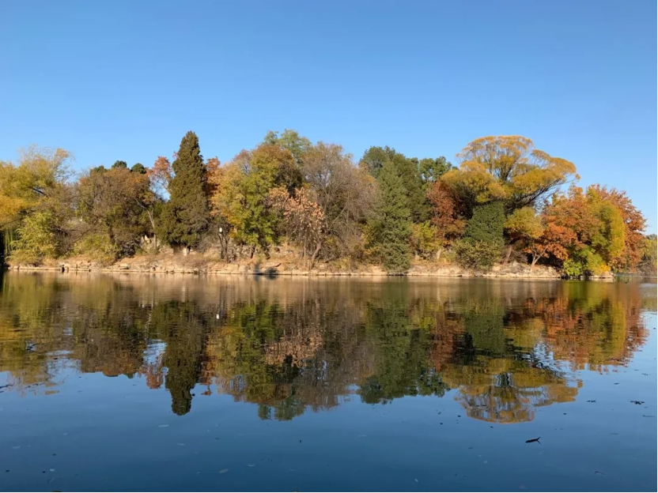
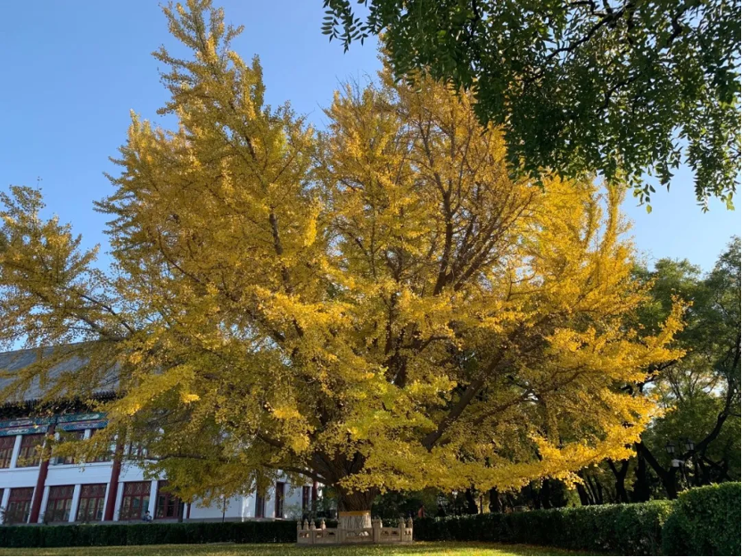
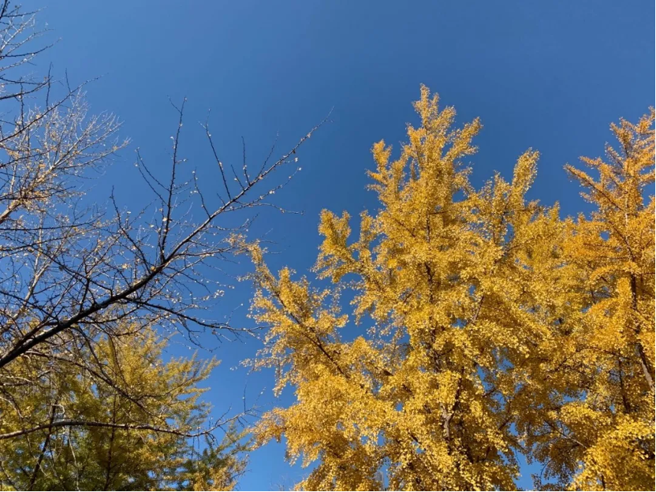
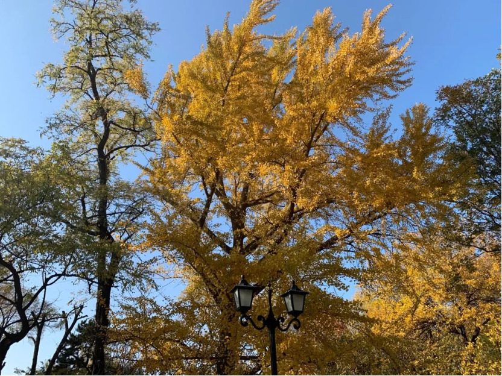

勇于冒险或许会一时失足，却步不前则会迷失自我。
Taking a risk can lead to a momentary stumble, but standing still can lead to a loss of self. ——Soren Kierkgaard
前段时间在澳洲的中国房东突然联系到我，跟我聊了会儿天。看他朋友圈才知道他又有一个孩子了。我刚住去他家的时候，他还是孤家寡人，我看着他从恋爱到结婚再到现在已经有两个女儿了。 在澳洲认识的一对香港夫妇，最近也有小孩了。刚认识他们的时候，他们拿到pr，回国办了场婚礼，正在申请澳洲国籍。而现在似乎一切都尘埃落定了。
Some time ago, a Chinese landlord in Australia suddenly contacted me and chatted with me for a while. Only by looking at his circle of friends did he know that he has another child. When I first moved to his house, he was still a widow, and I watched him have two daughters from love to marriage to now. A Hong Kong couple I met in Australia recently also had a child. When I first met them, they got PR, went back to China for a wedding, and were applying for Australian citizenship. And now everything seems to have settled.
然后我想，人一生会遇到很多人，这些人都是冥冥之中给你的机会。 这种机会不一定是让你去认识去结交他们，而是告诉你：原来世界上还有人在以这样的方式生活着。
Then I start to think, people will meet many people in their life, and these people are opportunities for you in the dark. This kind of opportunity is not necessarily for you to meet and make friends with them, but to tell you that there are still people living in this way in the world.
美国的Thomas，和我同龄，从大学毕业之后就开始在全世界旅游，学会了德语西班牙语日语，认识我的时候他正在澳洲打工度假，已经自学了中文一个月，可以跟我进行简单的沟通交流。
Thomas from the United States, the same age as me, began to travel around the world after graduating from college, and learned German, Spanish, and Japanese. When he met me, he was on a working holiday in Australia. He has been learning Chinese by himself for a month, and he can communicate in a simple way.
德国的Lisa，在德国以及澳洲的subway工作了十年，遇见我的时候，她说自己厌倦了服务行业的工作，于是她找到了一份文职工作。我一点也不惊讶，毕竟以德国人的严谨和细心，她找不到才奇怪
Lisa from Germany, who has worked in Germany and Australia for ten years, said when she met me that she was tired of working in the service industry, so she found a clerical job. I'm not surprised at all, after all, with the rigor and care of Germans, it's strange that she can't find it.
澳洲的Litia，高中毕业觉得不用读大学也能养活自己，于是开始从事各种服务业，后面她跟我说虽然出来工作了这么久，但她还是觉得自己对生物感兴趣，于是她在21岁的年纪，选择重新读大学。
Litia from Australia, after graduating from high school, felt that she could support herself without going to university, so she began to engage in various service industries. Later, she told me that although she had been working for so long, she still felt interested in biology, so she chose to re-enter University when she is 21.
比利时的Josh，跟我同龄，专业是语言学，申请到了悉尼的硕士学位，但是却在暑期跑到澳洲原住民区实习了几个月，帮助当地人翻译和记录原住民语言。
Josh from Belgium, the same age as me, majored in linguistics, applied for a master's degree in Sydney, but went to Australia's aborigines for a few months in the summer, helping locals translate and record aboriginal languages.
美国的Chuck，毕业于耶鲁大学法学院，却去到澳洲原住民区做一个法律服务中心的经理，为当地原住民提供免费法律援助。当初也是无意间在fb上看到Chuck的招聘信息，我才去律所做了几个月志愿者。了解了他们的工作之后，对他有了更多的敬佩。
Chuck from the United States graduated from Yale Law School, but went to Australia's aborigines to be the manager of a legal service center, providing free legal assistance to local aborigines. I also accidentally saw Chuck's recruitment information on FB, and I went to the law firm to volunteer for a few months. After learning about their work, I have more admiration for him.
因为认识了这么多人，我才知道，原来这个世界并不是一条路走到黑，并不是只能按部就班地走下去。你每遇到一个人，都能从他们的经历中学到一些经验。这些经验或许是告诉你可以往哪个方向去努力，也可以是告诉你千万不要去尝试什么。
Because I met these people, I realized that this world is not a one-way road to darkness, and it is not just a step-by-step process. Every time you meet someone, you can learn something from their experience. These experiences may tell you which direction to work towards, or tell you what not to try.
人生总会有很多摇摆时刻。可能你每遇到一个人，每了解一条新的出路，心里都会产生动摇，不知道应该做何选择。但往往在你犹豫不决的时候，这个选择就已经转瞬即逝了。就好像我现在回想起来，在澳洲，其实我有很多个让现在的生活完全不一样的机会。因为我明确，一旦做了选择，即使是在眼下看来很小的一个选择，它都可能会改变我的一生。 当然选择从来都不嫌多。每一种选择，都会带来不一样的体验。当我们明白自己的人生不是用结果，或者大众眼中的“成功”、“阶层”来定义的时候，其实我们就拥有了更多的空间和可能性。因为不再被这些标准所束缚，我们就拥有了叙述自己生命的自由。我们可以一直拓宽自己生命的宽度，而不是高度。
There will always be wobbly moments in life. Maybe every time you meet someone, every time you learn about a new way out, your heart will be shaken and you will not know what to choose. But often when you are hesitating, the choice is fleeting. It's like when I look back now, in Australia, I actually had a lot of opportunities to make life completely different now. Because I know that once I make a choice, even a small one right now, it could change my life. Of course, there is never too much choice. Each choice will bring a different experience. When we understand that our life is not defined by results, or "success" and "class" in the eyes of the public, we actually have more space and possibilities. Because we are no longer bound by these standards, we have the freedom to narrate our lives. We can always expand the breadth of our lives, not the height.
有人说，这个世界上没有所谓的选择存在。选择，说白了就是放弃。但是我还是不愿意这么去想。就好像我跟一个学法律的朋友聊天，他说去为别人解决问题让自己感到很满足但实际上知道自己很大程度上改变不了什么。我说，才不要这么想，你应该想：即使知道自己能力有限，但能为别人尽微薄之力还是很有成就感。
Some people say that there is no so-called choice in this world. To choose, to put it bluntly, is to give up. But I still don't want to think about it. It's like I was chatting with a friend who studied law and he said he was satisfied to solve problems for others but actually knew that he couldn't change much. I said, don’t think like that, you should think: Even if you know your own capabilities are limited, it is still very fulfilling to be able to do a little for others.
而关于“选择”，我也不愿意悲观地把它看成是对其他东西的放弃。因为做选择的时候，我们无法兼得所有的好坏，只能让自己认识并接纳可能的代价，做出一个长期来看对自己更好的决定。既然选择是我做的，那我就要承担失去其他东西的代价，但是这个代价是我提前就知道的，而且这是我权衡利弊做出来的最好的选择，那为什么要称之为放弃呢？既然做了选择，就不要再去惋惜了。说选择是一种放弃，其实说白了，就是自己没有能力去承受选择所带来的代价。
And about "choice", I don't want to pessimistically see it as giving up other things. Because when making choices, we cannot have all the good and the bad, we can only make ourselves aware of and accept the possible costs, and make a decision that is better for ourselves in the long run. Since the choice is made by me, then I have to bear the cost of losing other things, but this price is known in advance, and this is the best choice I made after weighing the pros and cons, so why call it giving up? ? Now that you have made a choice, don't regret it anymore. To say that choice is a kind of giving up, in fact, to put it bluntly, it means that you have no ability to bear the cost of choice.
对于想要追求体验感多于结果的我们来说，任何选择都有着它的魅力。而走过的每一步都是在增加我们生命的丰富度，并不是对时间的一种浪费。在这样的心态下，当下选择什么也许就不那么重要了，只在于我们如何记录好每一条路上的风景。
For us who want to pursue experience more than results, any choice has its charm. And every step we take is increasing the richness of our lives, not a waste of time. In such a state of mind, what we choose at the moment may not be so important, but how we record the scenery on each road.